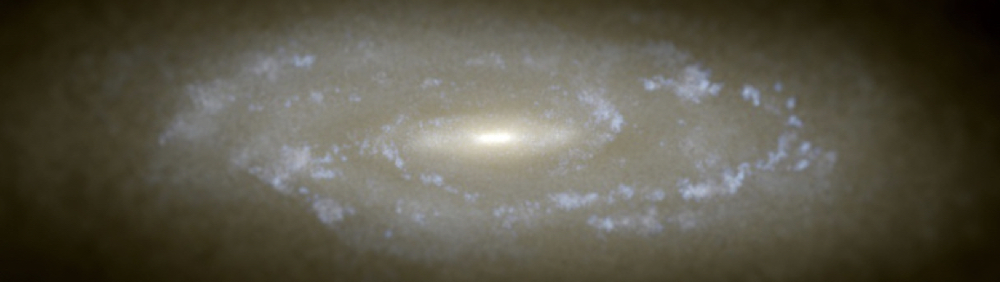

53rd Heidelberg Graduate days 2024 - Machine Learning and differentiable programming for Astrophysics
Dates
- Monday 7.10.2024 - Friday 11.10.2024 14:00 - 17:00
Content
As modern astrophysical surveys deliver an unprecedented amount of data, from the imaging of hundreds of millions of distant galaxies to the mapping of cosmic radiation fields at ultra-high resolution, conventional data analysis methods are reaching their limits in both computational complexity and optimality. Deep Learning has rapidly been adopted by the astronomical community as a promising way of exploiting these forthcoming big-data datasets and of extracting the physical principles that underlie these complex observations. At the same time advance in differentiable programming languages and libraries such as PyTorch, jax or julia have enabled to write computer code that is automatically differentiable. This enables completely new ways of modelling astrophysics by e.g. combining numerical forward simulations with gradient based optimisation or simply the joint training of neural network surrogates inside larger numerical simulations. In this lecture we will start out by giving an overview over the most recent advancements in ML for astrophysics, covering important architectures that incorporate physics knowledge as inductive biases (e.g. Hamiltonian Neural Networks, Physics-informed-neural-networks) and going all the way to generative architectures such as normalizing flows and diffusion models. In the second half, we will further cover topics of differentiable programming and automatic differentiable physics simulators. Each lecture day will further feature hands-on examples on the topics covered.